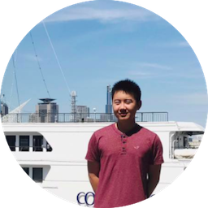

NOTE: Exec positions are available. If interested, please contact any of our team members.
Jake is a senior studying Math and Computer Science and Chinese Studies. His days are split between classes and research, but his early mornings and late nights are consumed by his coding addiction. Most experienced in iOS dev, but recently enjoying frontend in React/Node, as well as VR dev in Unity/C++.
Chris is a senior studying Biology and Computer Science. His work includes computational biology research and exploring methods in which technology can improve and advance the practice of medicine.
Hiroo is a junior studying Computer Science. He is involved in User Research and Product Design.
Jonathan is a senior studying Computer Science and Mathematics. In his free time, he enjoys playing tennis and going on hikes.
Jose is a junior studying Mathematics and Computer Science. He is mostly focused on competitive programming, artificial intelligence, NLP, and computer security. When he is not coding, he enjoys playing chess and swimming.
Chris is a sophomore studying Computer Science and German Studies. He is predominantly excited about hardware and microcomputing. He also has a passion for mentoring students outside of class, and managing several group projects for the Dev Initiative.
Safa is a sophomore studying Computer Science.